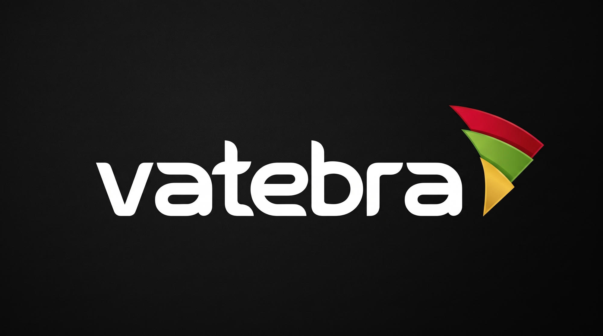

Supporting live streaming and event production, with hands-on troubleshooting across computers and audio-visual equipment.
ROLE NOTES +
Operate live-streaming and digital broadcasting equipment at public events.
Provide on-site computer diagnostics, software setup, and time-sensitive troubleshooting.
Contribute videography and multimedia production while supporting audio-visual systems.
2020 — NOW

SEASONAL · DOCUMENT MANAGEMENT
Vatebra (WAEC) — Ad Hoc Staff (Worker)
At WAEC in Yaba, Lagos, Nigeria, transitioned physical corporate assets into secure digital files using the electronic Document Management System (eDMS), maintaining data integrity across high-volume records.
ROLE NOTES +
Digitized, indexed, and archived corporate documents with high precision.
Applied technical storage protocols while maintaining strict data integrity and compliance.
VISIT SITE ↗FOUNDATION WEBSITE01 / 04Amb. Tokunbo Oderinde FoundationA foundation website sharing its mission to support students through education and opportunity.
VISIT SITE ↗MEMORIAL WEBSITE04 / 04A life rememberedA memorial experience with a life-story timeline and space to share condolences.
03 / THE PERSON BEHIND THE WORK
I work where technology meets everyday life.
✳
I’m a Computer Science student at TASUED, a frontend developer,
and the person who likes figuring out why the setup isn’t working.
I bring together web development, IT support, and a background in
live media to build and support experiences that work for people.